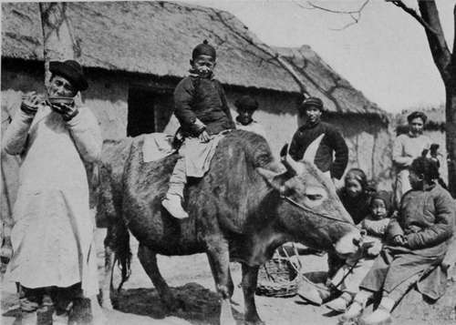

V. A Chinese Doctor
Description
This section is from the book "Foreign Magic: Tales of Every-Day China", by Jean Carter Cochran. Also available from Amazon: Foreign Magic: Tales of Every-Day China.
V. A Chinese Doctor
DO not take off your shoes until you come to the river brink," so runs the pithy Chinese proverb, from which the wayfaring man, though a foreigner, may easily gather that bridges are scarce in some parts of the Flowery Kingdom.
Dong Sien Sung, with his face turned towards home and the setting sun, was too engrossed in other thoughts to dwell on proverbs, although he and his trusty steed had forded many streams that day. Can you see them as they threaded their way carefully along the narrow paths so full of stones and pitfalls? To stumble might mean a headlong fall into the unpleasantly wet field that bordered the way, and if the donkey had fallen there would have been damage done to the bedding, for in China it is not only fashionable, but necessary, to carry one's own bedding when one takes more than a day's journey. Do not be deceived into believing that Dong Sien Sung looked in any way ridiculous as he rode aloft on top of his roll of bedding, for it is a fact that a Chinese gentleman never loses his dignity.
Fortunately for Dong Sien Sung, his donkey now knew every stone in the road, and every mud-hole thereof that was more than a week old, so the man could give himself up undisturbed to his meditations. Mechanically he answered the polite inquiries from late workers in the fields. These were obvious questions such as: "You are travelling to-day?" or "You are in the country this afternoon?" and he replied, "Yes, and you are bringing in the last of the harvest?" The city folk and the country folk both have their respective codes of etiquette.
But what was troubling Dong Sien Sung? For he had forgotten altogether the wise advice of the sages; he had already taken off his shoes, and was struggling almost over his depth in the midstream of his dilemma. The keynote to his difficulty lay in the words that had been ringing in his ears all day almost like a refrain, "A thousand taels a year." To Dong Sien Sung that sum meant comparative wealth, a tripling of his present salary, and no cause for trebling worry certainly.
On his recent visit to the busy port of Ching
Kiang he had met an old friend who had inquired politely how he was, and what his prospects were. He had answered that he was well and enjoying his work, and his only regret was that he was not earning quite as much for his family as he would like.
"It is a favourable hour when I met you," his friend exclaimed; "I have been looking for a foreign-trained doctor like yourself to settle with me in the Interior. I have a chance to start in business there, but I do not want to take my children where there are only Chinese practitioners; we have learned too much for that. I can promise you at least a thousand taels a year; the inhabitants are very progressive and eager for a man who can use the foreign medicine."
Dong Sien Sung shook his head. "To stay with Dr. Scott, who needs me, would be 'Following the Way'," he replied, for he was well versed in the classics.
His friend, however, refused to have the proposition declined so summarily, and said that he would leave the offer open for a few weeks until Dong Sien Sung had thought it over more carefully. Now the trouble with Dong Sien Sung was that he had a conscience and, moreover, it was a well-trained Christian one. On the face of it, the offer was most alluring, and one that few really progressive young men could resist; but there was another side to be considered. Without doubt he owed everything to the foreigners, and as he rode, his thoughts went back to his childhood with its pitiful struggle against poverty while the shadow of starvation constantly fell across his path. Then a missionary had come and put him and his brother into school, for this friend had seen possibilities in the two ragged boys.
Dong Sien Sung had been unruly and unap-preciative of the advantages given him. The teachers had often been unable to understand his view-point, and some of the foreigners' ways seemed senseless to him; but underneath it all he had become dimly conscious of a great love, and a desire to benefit him, which had at last won the day. He had received as good a medical education as the missionary college could give, hampered as it was by the Chinese restrictions against dissection and the study of anatomy, and when a new station was opened in the north under a foreign surgeon he had gone there as assistant and student. Under the care of his new teacher he had grown from a raw, awkward, and often moody young man, to be a very skilful assistant, who gave ether and handed instruments like an expert. In his thoughts Dong Sien Sung was too modest to claim all this for himself, but he knew that in many ways he was indispensable to the station.
The Ox Makes A Gentle Steed For The Children In The Village Of The Arrogant Dragon.
When The Thermometer Falls In China, On Goes Another Layer Of Padded Garments.
The foreigners came to him about questions of Chinese etiquette, or when the mission had a chance to buy a bit of land, and he saw to it that they were not cheated. In the last six months Dr. Scott had left him more and more in charge of the primitive hospital, and he enjoyed the sense of responsibility, while the foreign doctor was thus enabled to do some original work in studying Oriental diseases. Dong Sien Sung knew that mission stations were poor, and that they could only afford to pay their helpers a living wage. His salary could not be raised without raising that of the other workers, and yet there was a sense of dissatisfaction and uneasiness that his income was so far below what he might earn in other places.
So his river was a very deep and a very-muddy one, and the bank of decision seemed a long way off. By the time that he had studied the subject to this extent they were going through the narrow street of the village of the Arrogant Dragon. The name was the only pretentious thing about the hamlet, for the half-tumbled-down mud houses with their thatched roofs looked far from arrogant. - Perhaps the dragon, while in a fit of rage, had nibbled pieces out of the walls and pulled the straw from the roofs and then had retired in high dudgeon to the ruined temple which was his abode. As he entered the village the traveller passed a water-coolie with his two buckets swung on a pole over his shoulder.
Continue to: